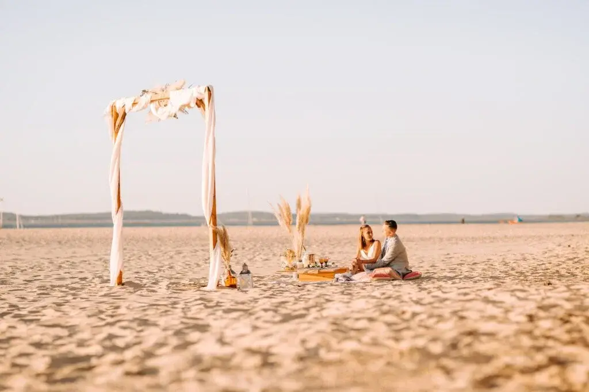

Dreaming of a wedding at an unusual venue on the Arcachon Bay or Cap Ferret, but not sure how to organise it? Don't panic! I'm here to handle everything with you…
A wedding like no other
A wedding like no other in the Bordeaux region feels right and is what suits you best, in an unusual setting such as a catamaran on the Arcachon Bay. How wonderful it would be to get married with your feet in the water at the Bartherotte cabin on Cap Ferret! An exclusive, bespoke and authentically Bordelais wedding!

Decor, a major asset!
And why not decor that truly reflects you, so your wedding will amaze your guests beside the oyster farmers' cabins? As a wedding planner, I can organise the most unusual wedding imaginable, adapting to your requests and tastes. Hold a symbolic ceremony on the beach or even in a private garden!

An unusual theme and venue
How about arriving on quad bikes, or a very different theme such as medieval, cartoons or eco-friendly? I'll happily make it happen so that this day is the best it can be. Tell me about yourselves and your wishes.
I'm with you all the way!
I'll accompany you through your wedding right up to the big day. I can find unusual suppliers in Bordeaux and the surrounding region who perfectly match your requests. Do you love springing improbable surprises on your guests? Why not a magician who makes the bride levitate?
Get in touch!
So to organise the unusual wedding YOU have been dreaming of, don't hesitate to contact me by email or phone so we can talk it over together.
Lovely Day Event offers several services
Wedding planning
I step in at every stage of your preparations and guide you through your choices, bringing ideas and suggestions so that your wedding looks like no one but you.
Wedding design
Creative and passionate, I am a certified Wedding Designer and I create a scenographic atmosphere that matches the theme of your wedding.
On-the-day coordination
I will be the conductor of your day, managing the suppliers, the set-up of your decor and the smooth running of this beautiful day.